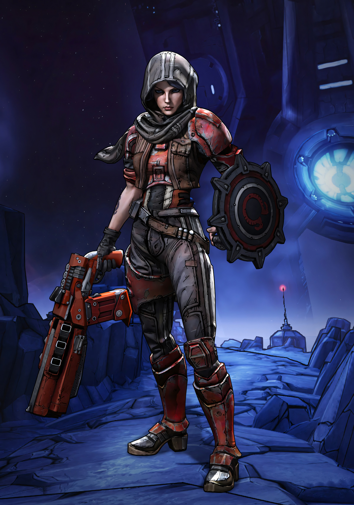
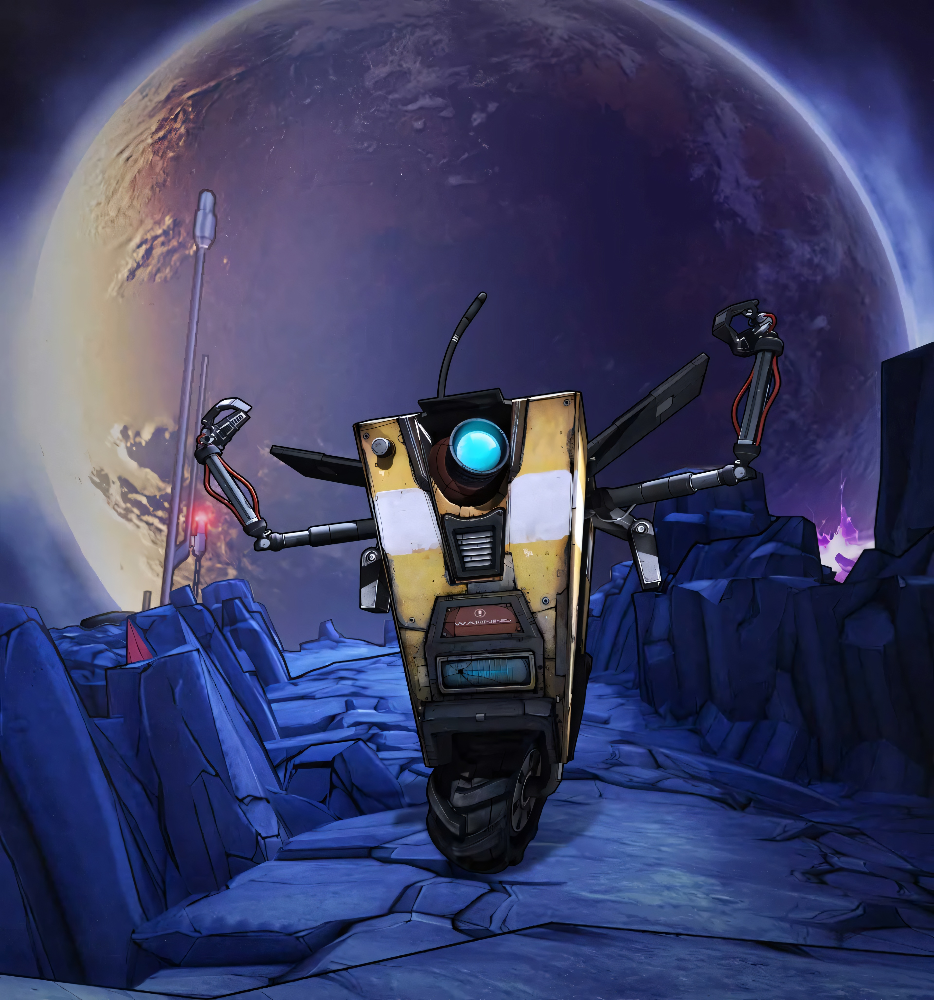
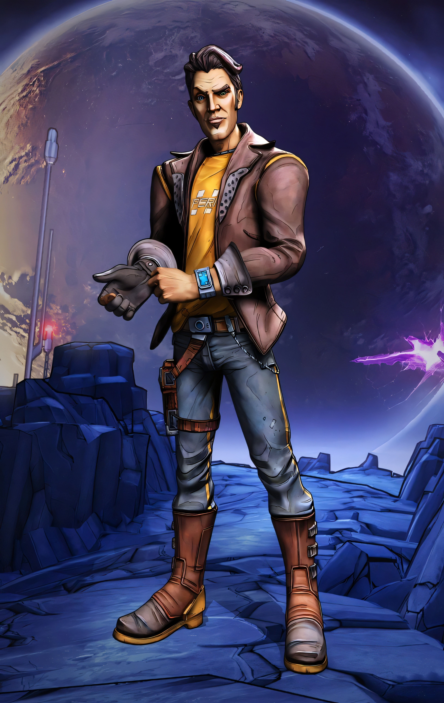
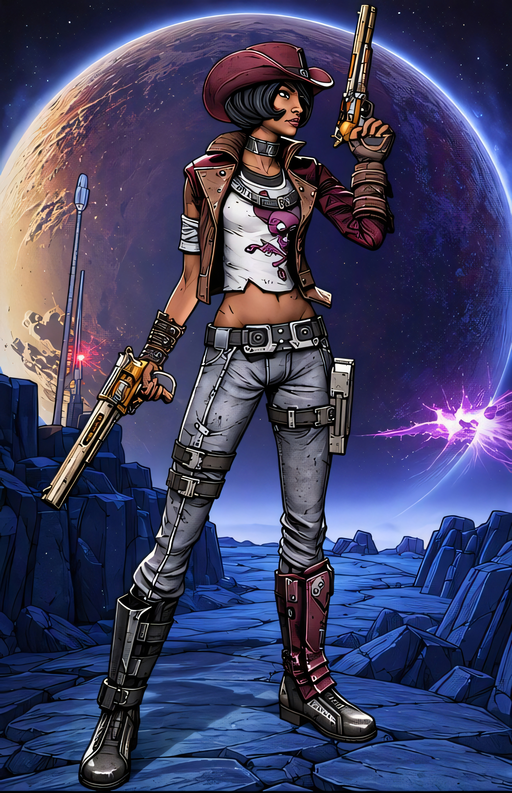
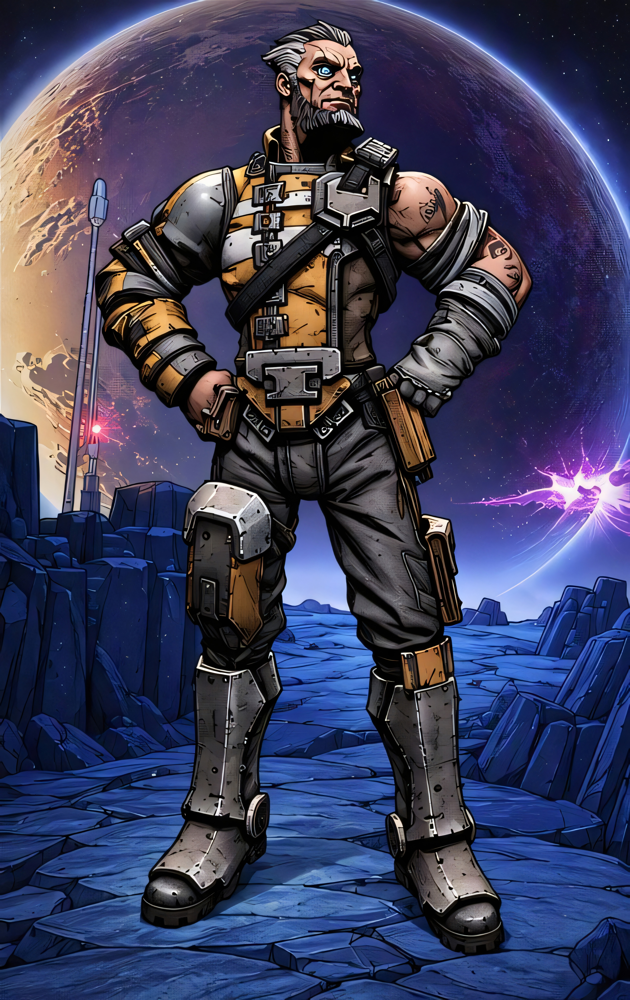

LES CHASSEURS DE L'ARCHE DE BORDERLANDS

ATHENA
Ancienne assassine de la corporation Atlas combat comme mercenaire aux côtés du futur Beau Jack.
Son bouclier d'énergie, l'Aspis, absorbe les dégâts frontaux avant d'être projeté sur les ennemis pour exploser. C'est le tank par excellence du jeu, redoutable en première ligne, au corps-à-corps et avec les dégâts de feu et de choc.
Capturée par les Chasseurs de l'Arche, c'est elle qui raconte toute l'histoire du jeu à travers ses souvenirs.

CL4P-TP
Son programme analyse la situation et déclenche aléatoirement une compétence inspirée des autres Chasseurs de l'Arche (comme le double défouraillage de Salvador ou l'invisibilité de Zer0), affectant souvent toute l'équipe de manière loufoque.
Il est redoutable avec les explosifs, immunisé contre le manque d'oxygène (car c'est un robot), et possède un arbre de compétences entièrement dédié aux bonus d'équipe (au prix de sacrifices drôles). Son gameplay repose sur le fun et l'aléa, ce qui en fait un personnage adoré ou détesté en multijoueur.

JACK
Ayant subi une chirurgie faciale et vocale pour ressembler trait pour trait au futur Beau Jack, il combat comme mercenaire pour rembourser ses dettes d'études.
Très polyvalent et accessible, il excelle à harceler ses cibles grâce à ses clones qui explosent ou renaissent en boucle selon les compétences choisies. Il tire d'immenses bonus de l'utilisation d'armes de marque Hyperion et peut accumuler de la "coquetterie" pour booster ses statistiques de combat.

NISHA
Cette justicière sadique et impitoyable est engagée comme mercenaire par Beau Jack, dont elle deviendra plus tard la compagne et la shérif d'Lynchwood.
Sa compétence active active une visée automatique ultra-rapide (aimbot) qui cible instantanément les points faibles des ennemis tout en augmentant la cadence de tir et les dégâts. Elle est considérée comme le personnage ayant le plus gros potentiel de dégâts bruts (DPS) du jeu, capable de nettoyer des pièces entières en quelques secondes. Elle excelle dans le maniement des pistolets, peut s'équiper de deux armes de poing en même temps grâce à ses compétences, et punit ses agresseurs au corps-à-corps avec son fouet.

WILHELM
Ce mercenaire froid et obsédé par les améliorations cybernétiques est engagé par Beau Jack, avant de devenir le redoutable boss cyborg de Borderlands 2.
Il déploie deux drones de combat simultanément. Loup survole la zone pour traquer et bombarder les ennemis, tandis que Saint reste près de Wilhelm pour restaurer son bouclier et sa santé. Très équilibré et idéal pour les débutants, il offre une excellente puissance de feu combinée à une survie automatique de zone grâce à ses drones. À mesure que vous dépensez des points dans son arbre de compétences cybernétique, son corps se transforme physiquement en robot et sa voix devient de plus en plus robotique.
AURELIA
Elle projette un tesson de glace magique auto-guidé qui harcèle les ennemis et gèle instantanément les cibles à proximité.
Elle s'impose comme l'experte absolue du tir de précision (sniper) et maîtrise l'élément glace pour contrôler le champ de bataille.
Son arbre de compétences unique lui permet de signer un contrat de domesticité avec un allié, lui octroyant des bonus mutuels tant qu'il la sert fidèlement.